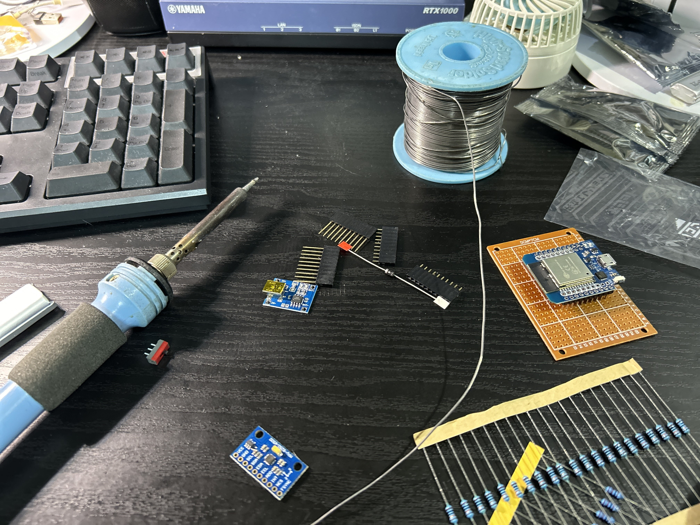

VRトラッカーを作る
きっかけ
フルトラッキング(HMDに加えて肘や膝，腰，足にもトラッカーを付けている)の人を見たとき， 自分もこのように細かい動きまで再現したいと思ったから
制作にあたって
この記事を参考にしました．
自作トラッカーを作ろう【SlimeVR】Part1, 2, 3
https://note.com/kirisamenanoha/n/n7e85548d2712 https://note.com/kirisamenanoha/n/n99c761adac9e https://note.com/kirisamenanoha/n/nb8feb44af600部品集め
電子部品はAliExpressがとても安くてありがたい
セーラー(販売者)ごとに送料取られるのだけどうにかしてくれ
- ESP32...アリエク
- MPU6500...アリエク
- TP4056...アリエク
- 1000mAh Li-ionバッテリー...アリエク
- 1N5819ダイオード...Amazon
- 3pinトグルスイッチ...共立電子
- 撚線...共立電子
- 抵抗(220k,100k)...自宅
制作
ユニバーサル基板に各部品をハンダ付けしていく

制作の様子
プログラム書き込み
まだ